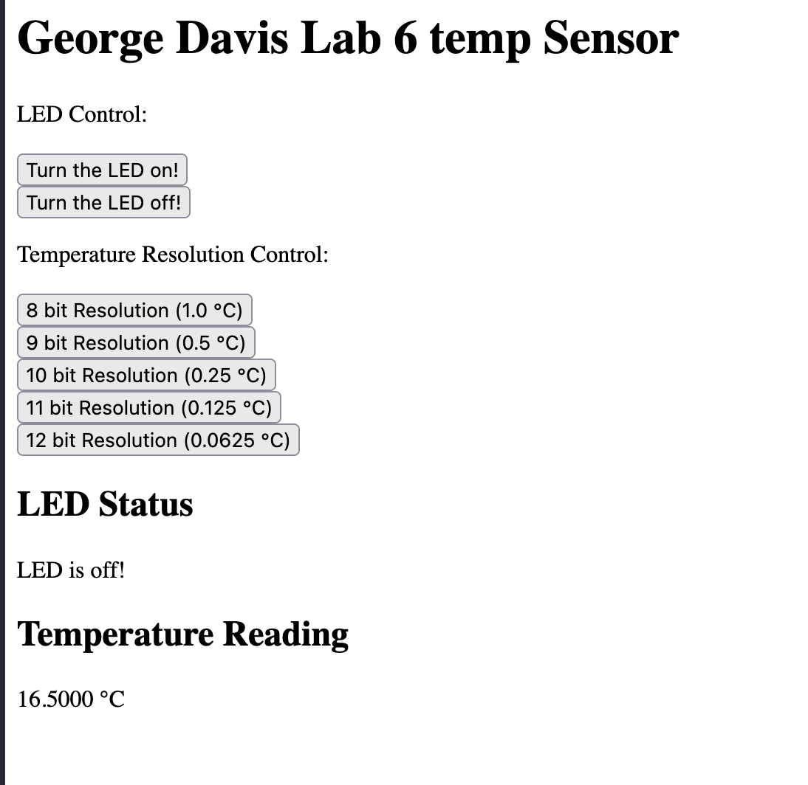

Lab 6 Report
Summary
This lab focused on writing and implementing a SPI drivers to interface with a temperature sensor module (DS1772) digital IC. The information extracted and decoded from the temperature sensors serial connection was then transmitted via UART to a ESP8266 wifi module which hosted a simple HTML page at the wifi port http://192.168.4.1/. My design meets all specifications by allowing the user to specify the bit resolution, turn the LED on and OFF and read the temperature in degrees C in real time all via the website. I spent 22 hours on this lab primarily on debugging my harware/
Simple HTML Website

Technical Documentation
The source code for this lab can be found in the associated Github repository found by following the link on the righthand side of the page.
Schematic
Figure 2 shows the physical layout of the circuit along with the pin names, numbers, and the component values.
STM 32 and DS1772 Pin Out
| Pin Function | MCU Pin (Hz) | DS1772 pin |
|---|---|---|
| MISO | PA6 | 5 |
| MOSI | PB5 | 6 |
| SCK | PA5 | 3 |
| CE | PA7 | 2 |
Example SPI Transaction
The transaction above shows the MOSI pin writing to the DS1772 config register to set the bit resolution and then reading the LSb and MSb temperature data.
AI Prototype
I was tasked with giving ChatGPT the following prompt
I’m making a web portal to interface with a temperature sensor. Create a HTML page that looks good and is intuitive to show the temperature, control an LED, and change the precision of the readout.
It responded with what looked like good HTML code but I needed to prompt it further to have what it generated fit well into my existing main.c. With this prompting I got it to render the following relatively ugly HTML site on the designated port.
The output quality of this prompt was very poor. I could have produced the same product with minimal effort and it would be easier to interface with as I would have understood it holistically. I think Chat is still a valuable resource for maybe more defined and smaller scale applications. Maybe, I could give it my existing HTML template and say “Make a button that does x with y formatting and UI preferences”.
I then gave it the following prompt to generate some functional C code:
Write me a C function to carry out a SPI transaction to retrieve a temperature reading from a DS1722 sensor. Make use of CMSIS libraries for the STM32L432KC.
I could tell right off the bat that this was garbage code the moment it was generated. The LLM misidentified the temperature sensor and number of its key details such as the config register and read registers for each of the LSb and MSb. Additionally, it failed to grasp that the CE was active high. The rest of the code compiled fine but it would take significant work in order to make it function with the DS1772 and STM32.